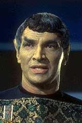
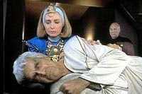
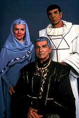
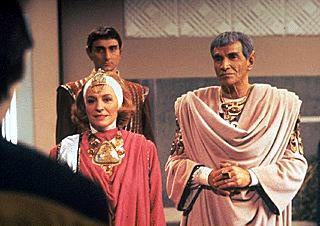

|
Meu
Vulcano Favorito: Sarek
 Sarek
de Vulcano, filho de Skon, neto de Solkar, pai de Spock. Este um
dos personagens marcantes da saga de Jornada nas Estrelas, at
mesmo mais do que alguns do elenco da Srie Clssica e dos
spin-offs da franquia ao longo dos anos. Sarek
de Vulcano, filho de Skon, neto de Solkar, pai de Spock. Este um
dos personagens marcantes da saga de Jornada nas Estrelas, at
mesmo mais do que alguns do elenco da Srie Clssica e dos
spin-offs da franquia ao longo dos anos.
 Mark
Lenard o ator que interpreta este personagem com tanta competncia.
Ele j tinha personificado um comandante Romulano na nave rmula
(sim, eu assisti ao episdio pela primeira vez com a antiga
dublagem da AIC-SP, em que nave Romulana ainda era "rmula"!),
antagonizando com Kirk em "Balance
of Terror", episdio considerado por isso mesmo um dos
melhores em toda a srie.
Lenard retornou em "Journey to Babel", na pele do
grande Sarek, onde vimos seu relacionamento tortuoso, conflitante e
respeitoso com o seu filho teimoso que abraou a carreira na Frota
Estelar. Na Nova Gerao ele apareceu em um episdio com
seu nome, desempenhando uma misso como embaixador da Federao,
onde manifestou uma debilidade fsica, a sndrome de Bendii.
 O
interessante nesta histria foi a ajuda de Picard a Sarek,
estabelecendo um elo mental com o Vulcano. Isso foi aproveitado em "Unification,
Part I", quando, de novo, nosso magnfico embaixador
se encontra triste e amargurado com a doena que o levaria
morte. Isso sem contar, claro, com a ltima briga com seu filho,
j tambm embaixador, Spock, disposto a tentar uma unificao de
seu planeta com os Romulanos revelia da Federao. Nunca mais
pudemos ver Sarek pontificando em outra srie, porque o ator
adoeceu e faleceu (vtima de cncer) anos depois. Acho que ele
teria merecido se envolver com os contratempos de Deep Space Nine
e Voyager.
Na produo de Jornada para o cinema, Lenard interpretou um
dos Klingons que foram mostrados sendo atingidos pela nave de V'Ger.
A surpresa aqui estava menos no ator e mais na ento revolucionria
maquiagem, com aquela "tartaruga" na cabea. Nas outras
vezes, Lenard interpretou Sarek, com exceo do quinto e embaraoso
filme. Nesse caso, um jovem Sarek demonstra certo desprezo pelo fato
de seu filho Spock ter nascido com caractersticas humanas,
conforme foi registrado na sua memria, instigada pelo meio-irmo
Sybok. Mas, como esse filme considerado antema, no podemos
levar essas coisas em considerao. De todo modo, foi a nica vez
que o personagem teve a sua interpretao realizada por outro
ator, Jonathan Simpson. Foi hilrio, mas, no teve nada a ver com
o Homer.
 As
participaes de Sarek foram bem mais incisivas e interessantes
nos outros momentos. No terceiro e quarto filmes, ele teve bem mais
destaque por causa da sua preocupao em "ressuscitar"
seu filho, lanado morto no planeta Genesis. Vale lembrar aqui a
chamada que ele deu em Kirk, cobrando uma forma de resgatar o corpo
de Spock para lev-lo ao monte Seleya e deix-lo aos cuidados dos
sacerdotes na cerimnia do "fal-tor-pan".
Em outros filmes, as melhores cenas so as da sua defesa dos ento
rebeldes da Frota Estelar, liderados por Kirk. Outra boa apario
foi em seu dilogo com Spock em "Jornada IV",
depois do julgamento e da condenao desse capito heri que tem
mania de pr os outros numa barca furada. Este o momento onde
Sarek revela o seu orgulho pelo trabalho de Spock e seus
companheiros, admitindo seu equvoco no passado de ter sido contra
o ingresso do filho na Frota Estelar.
Penso que lamentvel o fato de seu papel ter ficado reduzido a
poucos dilogos com o presidente da Federao em "Jornada
VI". Como era o ltimo filme de Kirk e sua turma, Sarek
poderia participar mais. Ele estava l batendo palmas na Conferncia
de Khitomer, mas no foi o suficiente. Concordo que meio injusto
falar depois da casa pronta, mas gostaria de ter visto mais a
participao desse que o primeiro grande Vulcano na preferncia
da populao de todos os quadrantes da galxia. Nas verses da Nova
Gerao j no daria pra fazer grande coisa porque no
tinha muito a ver. Tambm Lenard j no estava disponvel para o
papel e a trama no ajudava.

Apesar de tudo,
Sarek se estabeleceu como um elo slido entre as duas sries
criadas por Roddenberry, tanto na televiso quanto no cinema.
isto que conta pra dedicarmos a ele nossas maiores homenagens, sem
esquecer o fato de que isso se deve, mais do que tudo, qualidade
do ator que o interpretou.
Vida longa e prspera, Mark.
Cludio
Silveira escreve regularmente sobre os filmes com
exclusividade para o Trek Brasilis
|